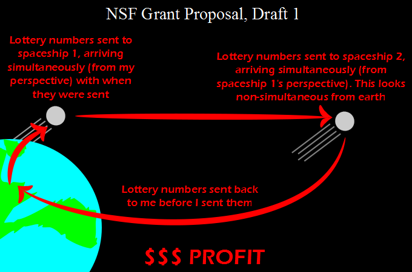

Comic JK 776
When I Feel Like It
⇤
<
?
>
⇥

⇤
<
?
>
⇥
Forum
.
RSS
.
Digg
.
Facebook
.
Reddit
.
Twitter
.
Stumbleupon
Enter your thoughts on number 776 here. Please, no spamming, trolling, or sending lotto numbers back in time. GENIUS! who needs step 3..?!?!? This reminds me of that recent thing of Neutrinos getting to their destination a little too fast... Unfortunately the webcast was at 2am for me and I forgot about it and missed it :( >If someone recorded this, or was awesome in some other way, feel free to link us. 2 6 18 33 37 41 4 8 15 16 23 42. Also this works better with quantum entanglement, if you want real simultaneous transfer >Actually, these numbers are prone to disappoint: Even if they are drawn, guess how many people use them, with which you'd have to share your winnings... We had this a few years ago, when the lucky numbers built a geometrical figure on the sheet. So many people had chosen them because of this, that instead of roughly a million Euros (which one winner would get) all the "winners" with all six numbers only got roughly 20000 Euros each... meaning, by the way, that on that day it was more profitable to only have five correct numbers... I'm not entirely sure I get this...Someone explain it to me, please. :) >In the special theory of relativity, time is experienced differently when travelling at different speeds. See Wikipedia for "Relativity of simultaneity". The joke also hinges on the internet meme of business steps: 1. Become the boss. 2. Promote synergy. 3. ??? 4. Profit $$$ >>You mean the original "Phase 1: steal underpants. phase 2: ??? Phase 3: Profit", right? >>>You mean 1. Aquire freind. 2. Harvest friend's organs. 3. ??? 4. CUPCAKES! >>>>No, Sweet apple massacre. >>>That may be the original, but mine was a reference to the Lonely Island song "I'm the boss". >>> u mean "like a baws" In a nutshell: If you approach the speed of light time slows down and you can travel into the future (proven!). If neutrinos can travel faster than light (new tests at the LHC suggest but do not prove this), then information can possibly travel back in time. >No need to get close to the speed of light to travel into the future. >>i am traveling at about one second per second >>> "About"?? >>>>I mean from your perspective. so its not exactly 1 >>>>When you approach the speed of light the effects get interesting is what I meant. Like muons and twins for example. At 0.85c you could go ~2 seconds per second. >It's 0.866c right? I.e. sqrt(3/2) Isn't it easier/better to accelerate photons past light speed, and use those as information carriers? That way, you're not bound by the differences in speed between the earth and those satellites. >I think photons, by definition, travel at the speed of light >> yes lol....